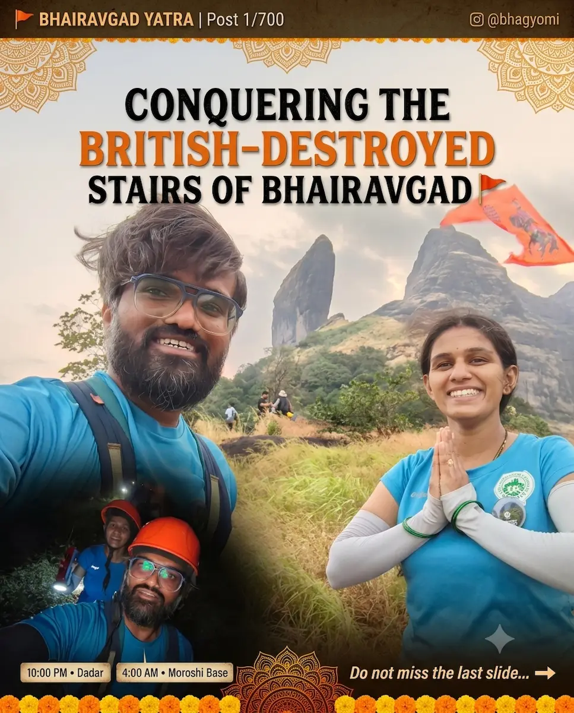
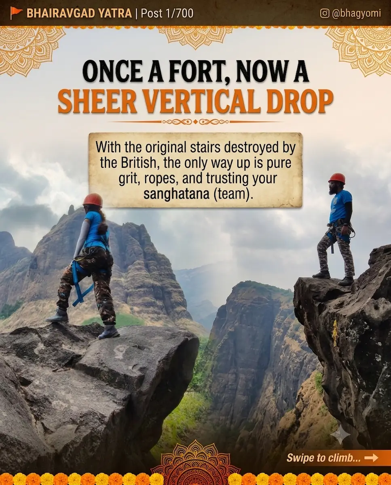
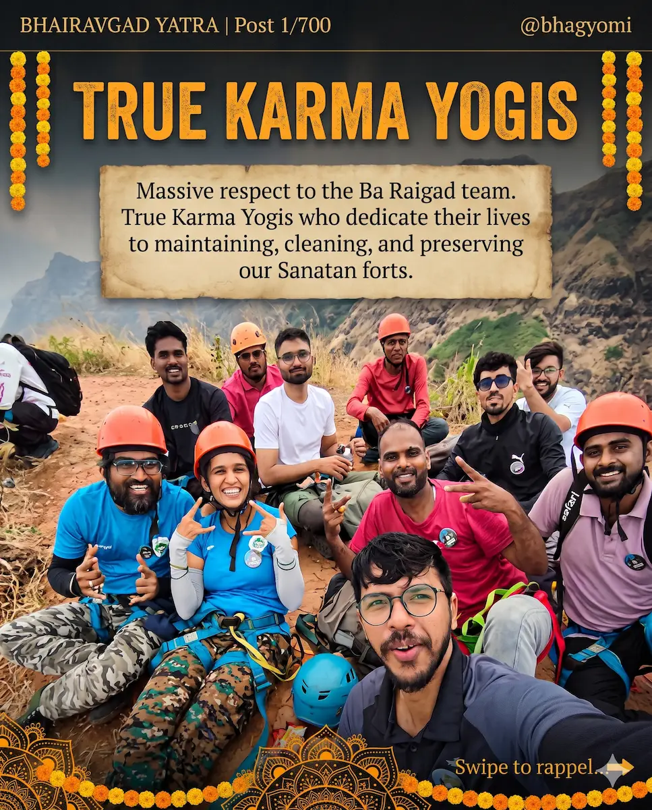
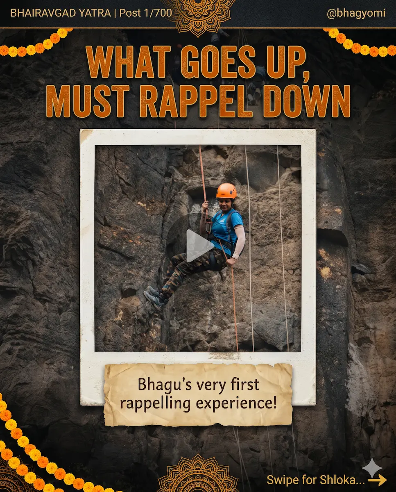

Why Moroshi Bhairavgad Stands Apart
Perched near Malshej Ghat, Bhairavgad (Moroshi) is not a casual monsoon hike — it is a test of composure, grip strength, and trust in your technical gear. Standing as a sheer volcanic pinnacle above the Konkan plains, the fort served as a strategic watchtower guarding the ancient Naneghat–Malshej trade corridor.
During the British era, the original rock-cut staircases leading to the summit were intentionally destroyed to prevent local forces from reclaiming the fort. Today, that missing stairway is replaced by an exposed vertical rock climb requiring dynamic ropes, harnesses, and experienced technical leads. At the summit, paying respects at the ancient shrine of Lord Bhairavnath surrounded by panoramic views of Harishchandragad and Naneghat turns pure adrenaline into a deeply grounding spiritual experience.
Exact Weekend Itinerary from Mumbai
For working professionals, an overnight departure lets you complete the climb and return home without taking weekday leave.
| Time | Milestone | Practical Notes |
|---|---|---|
| 10:00 PM | Depart Dadar, Mumbai | Board your group transport from Dadar East; eat a light dinner beforehand and rest during transit. |
| 04:00 AM | Reach Moroshi Base Village | Freshen up, stretch, and layer up — pre-dawn wind near Malshej Ghat gets chilly in winter. |
| 04:30 AM | Breakfast at Manu's Dhaba | Hot local poha and tea to fuel up without feeling heavy before the steep approach trail. |
| 05:30 AM | Approach Trek to Col | Brisk uphill walk through forest and loose scree up to the base of the sheer rock wall. |
| 07:30 AM – 11:30 AM | Vertical Rock Ascent & Summit | Harness up, follow the technical lead's footwork instructions, explore water cisterns and the Bhairavnath shrine at the top. |
| 12:00 PM – 03:00 PM | Rappelling Descent & Base Return | Controlled rappelling down the exposed cliff face (waiting times depend on group size), followed by the trail descent. |
| 04:00 PM | Post-Trek Lunch at Dhaba | Hot local meal back at Manu's Dhaba; rehydrate well with electrolytes. |
| 06:00 PM | Depart Moroshi for Mumbai | Return to Mumbai by late evening depending on Kalyan–Bhiwandi highway traffic. |
Photos from Our Moroshi Bhairavgad Climb
Tap or click any photo below to view it full-screen.




What to Pack: Essential Gear Checklist
- High-grip trekking shoes: Non-negotiable. Worn-out running shoes slip on loose scree and narrow rock footholds.
- 3 Liters of water + ORS/Electrolytes: There is no drinking water available along the exposed vertical patch.
- Compact 20–25L backpack: Keep both hands 100% free while climbing — secure water bottles inside so nothing drops onto climbers below.
- Quick energy snacks: Dates, roasted chana, chikki, or bananas while waiting your turn on the belay rope.
- Headlamp & sun protection: Needed for the pre-dawn start and the unshaded midday sun on the rock wall.
Estimated Budget Per Person (From Mumbai)
| Expense Item | Approx. Cost (INR) |
|---|---|
| Organized Technical Trek Package (Mumbai pickup/drop, ropes, safety gear, certified leaders) | ₹1,800 – ₹2,500 |
| Breakfast & Post-Trek Local Lunch (usually included in group packages) | ₹250 – ₹400 (if self-managed) |
| Personal Hydration, Snacks & Emergency Buffer | ₹300 |
| Total Estimated Budget | ₹2,100 – ₹3,000 per person |
Tips for Couples Tackling This Climb Together
- Build grip & core strength 2 weeks prior: Pull-ups, dead hangs, planks, and stair climbs make the vertical traverses dramatically smoother.
- Stay patient during rope queues: Technical patches move one climber at a time. Keep each other calm, hydrate, and never rush harness checks.
- Leave zero trace: Carry every wrapper and bottle back down to the base village. Our forts are sacred heritage sites — leave Bhairavgad cleaner than you found it.